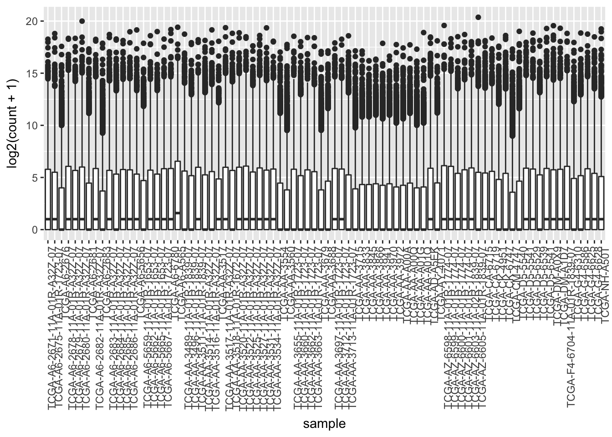
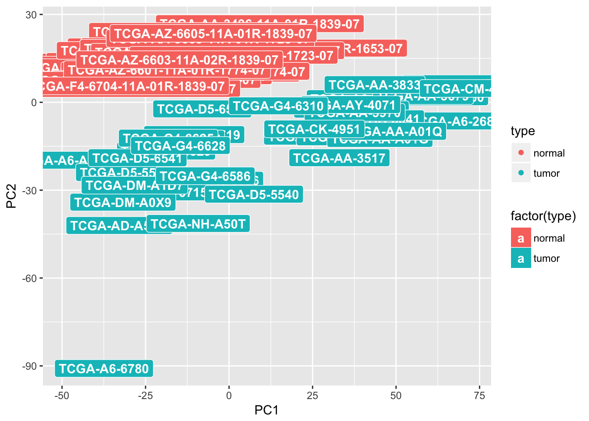

Workshop Project
This project will be completed in the two days of the workshop (August 28-29). We will assign attendess into groups to encourage discussions on approaching each quesstion. Everyone must do their own analysis and submit the final R code.
Project Overview
We will be working on a small subset of the TCGA Colon cancer dataset. The Cancer Genome Atlas (TCGA), is a collaboration between different research bodies to identify key genomic changes in various cancer types. These datasets are standards for hypothesis testing and validating findings.
We will be using a subet of the colon RNASeq dataset and clinical data. Following are the questions that we would like you to answer. There is no one way of answering these questions so feel free to use any of the many ways you have learnt to answer each question!
Questions
- Read in the two datafiles into R and using one of the built-in R functions look at the file structure i.e. figure out what is in the files.
- Find out how many samples are there in each file.
- Do all the sample names in the clinical and expression file match?
- Find out if there is any unnecessary information in the clinical file. Hint: Is there a column which does not provide any information? If so, please remove it from the file.
- For the gene expression data, find out where are the gene ids and assign gene ids as row names. Also remove the gene_id column after assigning the ids to rownames.
- Create a boxplot showing the distribution of the log of read counts for each sample. Make the x-axis lables verticle to the axis. A possible example is as follows:

- Point out a few characteristics of these boxplots.
- As this expression data is count data, remove all the zeros from the expression matrix. Now, remake the boxplot from question 4.
- Lets make things more exciting! Make a Principle Component Analysis (PCA) plot to see the relationship between samples and color your samples by type.
- We want to do the PCA on samples so samples should be rows in this case. Check if that is the case in your expression matrix. If not modify it.
- What are the things that you have to consider when making a PCA? Do you have to tranform your data (scale or center)? If so how can you do that? Make plots for both transformed and un-transformed data.
- Are the samples separated by type? Are there any subgroups within each subtype?
- Put sample labels on your PCA plot.
Example of one of the possible PCA plots is as follows:

- Usually for gene expression data, we want to see how the gene expression levels have changed in tumor samples compared to normal samples.Let us explore that by calculating log fold change for all genes in these samples.
- Find out the log2fold changes from normal to Tumor samples. Hint: You will first have to calculate the mean for each sample type and then calculate log2FC log2(mean(type1)/mean(type2))
- Find out the top 5 genes where Tumor samples have higher log2FC than normal samples
- Make plots for each gene separately with normal and Tumor sample expression.
- You must have noticed by now that normal samples have longer names than the tumor samples. Is there a reason for that?
- Check if we can remove the extra information in the normal sample names i.e. check if the longer names make the samples name unique or is it redundant information and we can get rid of it?